🍵 姬路城：茶道
The White Castle: Matcha · 设计：Sheila Santos & Israel Cendrero · Devir Games 出版 · 1–4 人 · 约 90–110 分钟（官方英文规则书全文翻译）
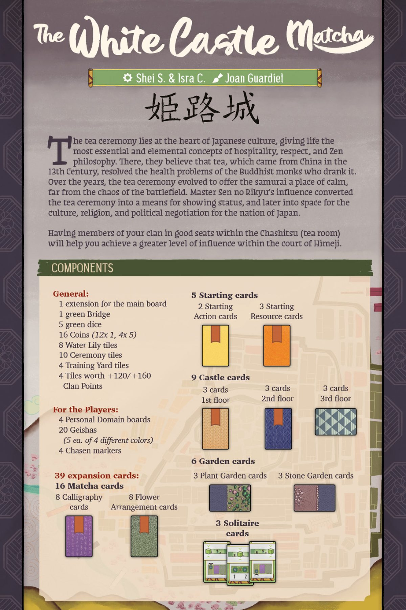
本页为《姬路城:茶道》(The White Castle: Matcha,Sheila Santos 与 Israel Cendrero 设计,Devir Games 出版)扩展的官方英文规则书全文翻译,底本取自 BoardGameGeek 文件区 Devir 官方英文规则书(WhiteCastle_Matcha_ENG.pdf,16 页),逐页全文译出,原书扫描图随文嵌入——点击任意图片即可放大查看。规则内容归 Devir 及版权方所有,译文仅供个人学习查阅。
整理说明:〔图标:……〕表示此处为印刷图标/图形,非文字;〔引言:……〕〔示例:……〕〔图示:……〕为整理所拟;术语与本站《姬路城》官方中文规则书保持一致(大名家纹=Daimyo Seal、家族分数=Clan Point、地头/使节/大名=城堡一二三层、家臣/武士/园丁、灯笼奖励、时间流逝轨等);新增术语译法:艺伎=Geisha、茶筅=Chasen、茶园=Tea Garden、茶室=Tea House(Chashitsu)、茶之路=Path of Tea、池畔眺台=Pond Overlook、睡莲板块=Water Lily tiles、仪式板块=Ceremony tiles、插花卡/书法卡=Flower Arrangement/Calligraphy、姬路城郊外=Outskirts of Himeji。原书为纯图扫描件,转录经本地 OCR 与视觉模型双遍对照核验;译文中数字与费用均照原书逐项核对。
〔封面:茶室场景插画,标题 The White Castle Matcha / 姬路城:茶道;署名 Shea S. & Isra C.(设计)· Joan Guardiet(插画);角标:姬路城〕
茶道居于日本文化的核心,赋予生命以好客、敬意与禅之哲学这些最本源的意涵。在日本,人们相信 13 世纪自中国传来的茶,解决了饮用它的佛教僧人的健康之虞。岁月流转,茶道日渐演化为武士远离战阵喧嚣的一方宁之所。千利休大师的影响,更使茶道成为彰显身份的方式,继而成为日本的文化、宗教与政治斡旋之空间。
在茶室(Chashitsu)中为你的家族谋得一个好席位,将助你在姬路城的朝堂上赢得更大的影响力。
游戏配件
〔图:扩展配件全家福——延伸版图、绿色桥梁与骰子、艺伎棋子、仪式板块、插花/书法卡等〕
通用配件
- 1 块 主版图延伸板
- 1 座 绿色桥梁
- 5 颗 绿色骰子
- 16 个 钱币(12 个 1 文、4 个 5 文)
- 8 块 睡莲板块
- 10 块 仪式板块
- 4 块 训练场板块
- 4 块 +120/+160 家族分数板块
每位玩家
- 4 块 个人领地版图
- 20 个 艺伎(4 种颜色各 5 个)
- 4 个 茶筅标记
39 张扩展卡牌
- 16 张 抹茶卡(8 张书法卡 + 8 张插花卡)
- 5 张 起始卡(2 张起始行动卡 + 3 张起始资源卡)
- 9 张 城堡卡(一层 3 张、二层 3 张、三层 3 张)
- 6 张 庭院卡(3 张植物庭院卡 + 3 张石头庭院卡)
- 3 张 单人卡
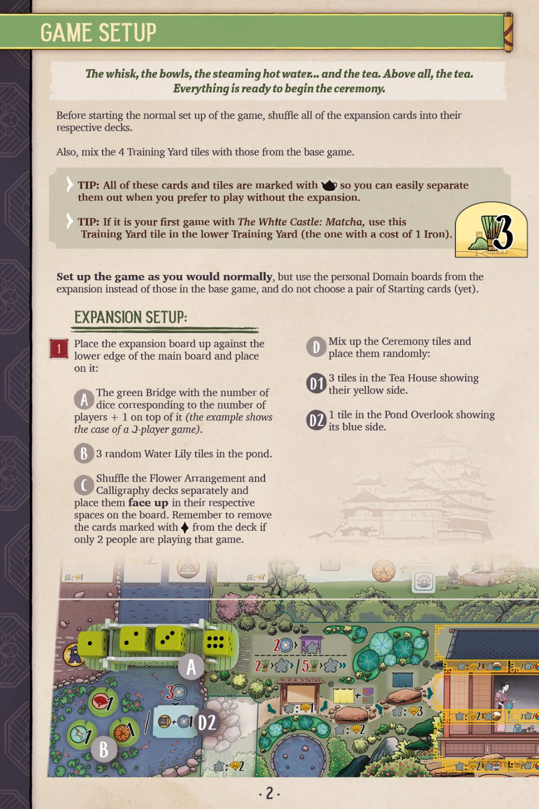
游戏设置
〔引言:茶筅、茶碗、滚烫的热水……以及茶。最重要的,是茶。一切已就绪,仪式即将开始。〕
在进行游戏的常规设置之前,先把所有扩展卡牌洗入各自对应的牌库。
同时,把 4 块训练场板块与基础游戏的训练场板块混在一起。
提示:这些卡牌与板块均标有〔抹茶图标〕,当你想不带扩展游玩时,可轻松把它们区分出来。
提示:如果这是你第一次游玩《姬路城:茶道》,请把这块训练场板块放入下方训练场(即费用为 1 铁的那个)。〔图:所示训练场板块〕
按常规方式设置游戏,但改用扩展的个人领地版图代替基础游戏的版图,并且(暂时)不要选择一对起始卡。
扩展设置
1. 把扩展版图紧贴主版图下缘放置,并在其上放置:
- A. 绿色桥梁,桥上放置与「玩家人数 +1」相等的骰子(示例为 3 人游戏的情形)。
- B. 3 块随机的睡莲板块放入池塘。
- C. 分别洗匀插花牌库与书法牌库,面朝上放在版图上各自的对应位置。若该局只有 2 人游玩,记得从牌库中移除标有〔2 人图标〕的卡牌。
- D. 混合仪式板块,随机放置: <ul> <li><strong>D1.</strong> 3 块放入茶室,黄色面朝上;</li> <li><strong>D2.</strong> 1 块放入池畔眺台,蓝色面朝上。</li> </ul>
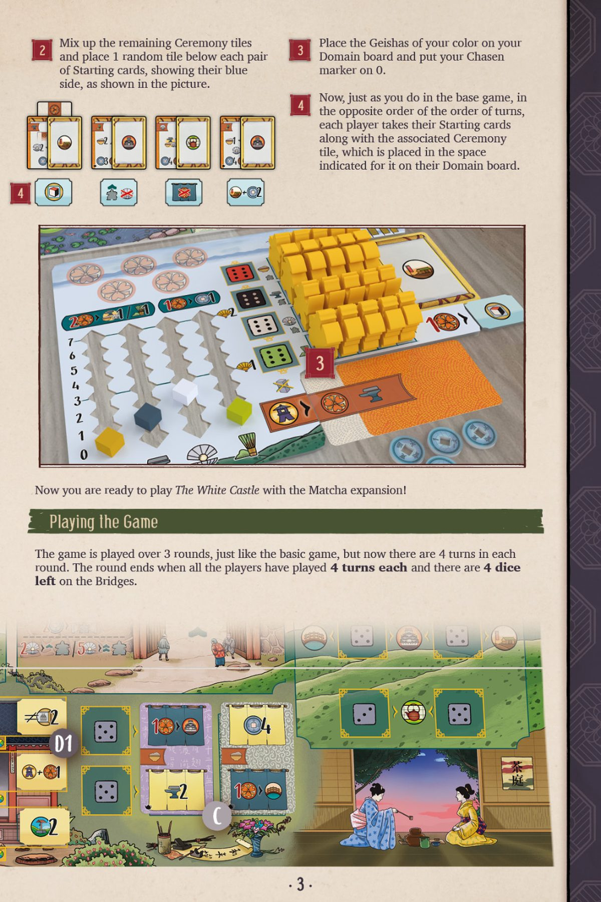
2. 混合剩余的仪式板块,在每对起始卡下方各随机放置 1 块,蓝色面朝上(如图所示)。
3. 把己方颜色的艺伎放到你的个人领地版图上,并把你的茶筅标记放到 0。
4. 与基础游戏一样,按回合顺序的相反顺序,每位玩家拿取自己的起始卡以及与之关联的仪式板块,后者放到其个人领地版图上指定的位置。
现在,你已准备好带着《茶道》扩展游玩《姬路城》了!
游戏进行
游戏仍如基础游戏一样进行 3 轮,但现在每轮有 4 个回合。当所有玩家各完成 4 个回合、且桥梁上(合计)只剩 4 颗骰子时,本轮结束。
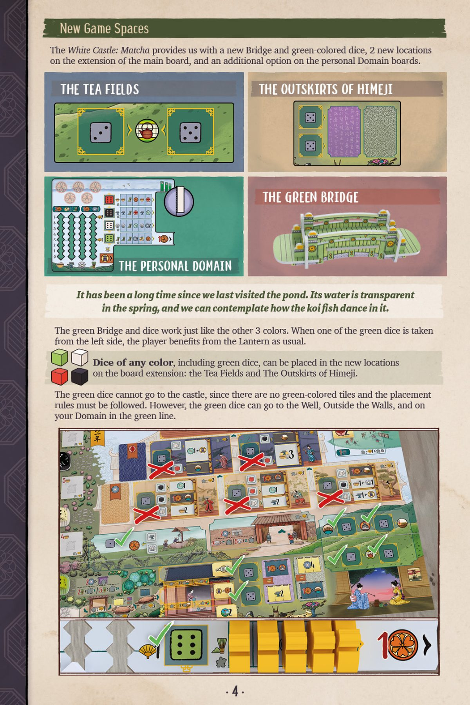
新游戏区域
《姬路城:茶道》带来一座新桥梁与绿色骰子、主版图延伸板上的 2 个新地点,以及个人领地版图上的一个附加选项。
〔引言(绿色桥梁):距上次造访池塘已过去许久。春日池水澄澈,锦鲤游弋之姿,尽收眼底。〕
- 绿色桥梁与绿色骰子的运作和其他 3 种颜色完全相同。从左侧取走绿色骰子时,玩家照常获得灯笼奖励。
- 任意颜色的骰子(包括绿色骰子)都可以放置在版图延伸板的新地点:茶田与姬路城郊外。
- 绿色骰子不能进入城堡,因为没有绿色的骰子板块,且必须遵守放置规则。不过,绿色骰子可以去水井、墙外,以及你的个人领地的绿色行。
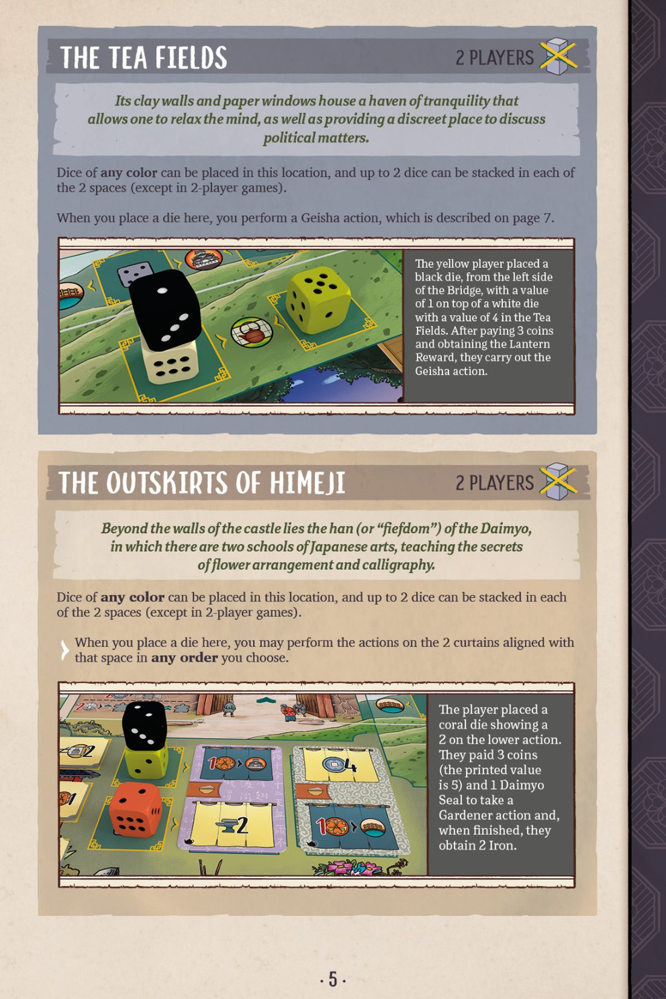
茶田
〔2 人图示:不可叠放〕
〔引言:土墙与纸窗围出一方安宁天地,既可静心涤虑,亦是密议政事的隐蔽之所。〕
任意颜色的骰子都可放置在此地点,2 个放置格各自最多可叠放 2 颗骰子(2 人游戏除外)。
在此放置骰子时,你执行一次艺伎行动(见第 7 页)。
〔示例:黄色玩家从桥梁左侧取走一颗值为 1 的黑色骰子,叠放在茶田中一颗值为 4 的白色骰子之上。支付 3 文钱并获得灯笼奖励后,执行艺伎行动。〕
姬路城郊外
〔2 人图示:不可叠放〕
〔引言:城墙之外是大名的藩(领地),其中坐落着两所日本艺能学校,传授插花与书法的奥秘。〕
任意颜色的骰子都可放置在此地点,2 个放置格各自最多可叠放 2 颗骰子(2 人游戏除外)。
在此放置骰子时,你可以按你选择的任意顺序,执行与该格对齐的 2 幅帘幕上的行动。
〔示例:玩家在下方的行动格放置了一颗点数为 2 的珊瑚色骰子。他们支付 3 文钱(印刷值为 5)与 1 枚大名家纹,执行一次园丁行动;行动完成后,获得 2 个铁。〕
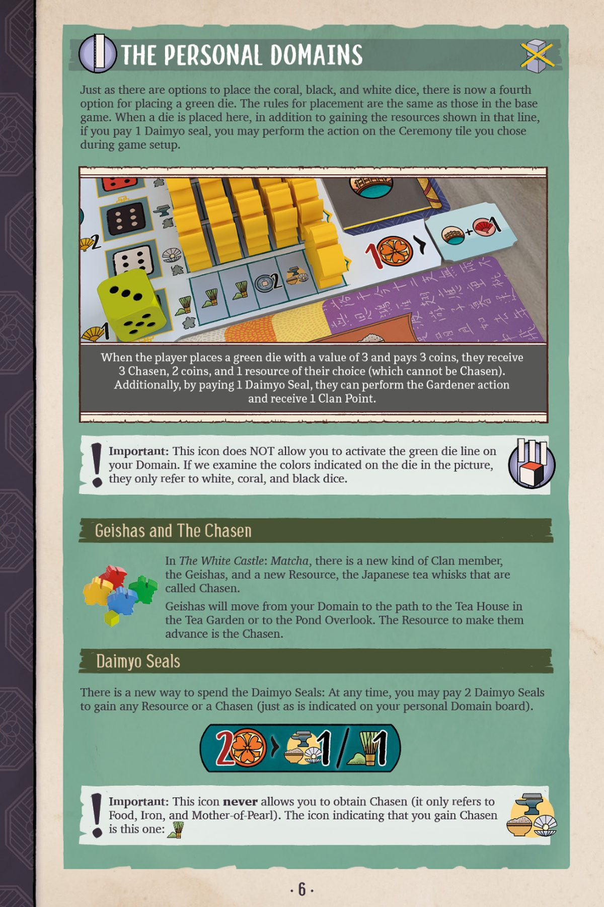
个人领地
正如珊瑚色、黑色与白色骰子各有放置选项,现在有了放置绿色骰子的第四种选项,放置规则与基础游戏相同。骰子放到这里时,除获得该行所示的资源外,你还可以支付 1 枚大名家纹,执行你在游戏设置时选择的那块仪式板块上的行动。
〔示例:玩家放置一颗值为 3 的绿色骰子并支付 3 文钱,获得 3 个茶筅、2 文钱与 1 个自选资源(不可为茶筅)。此外,再支付 1 枚大名家纹,即可执行园丁行动并获得 1 点家族分数。〕
重要:〔任意资源图标〕不允许你激活个人领地上的绿色骰子行。细看图中骰子图标上标示的颜色,它们只指白色、珊瑚色与黑色骰子。
艺伎与茶筅
《姬路城:茶道》带来一种新的家族成员——艺伎,以及一种新资源——日式茶筅(Chasen)。
艺伎将从你的个人领地出发,前往茶园,走上通往茶室的茶之路,或前往池畔眺台。推动她们前进的资源是茶筅。
大名家纹
大名家纹有了新的用途:任意时刻,你可以支付 2 枚大名家纹,获得任意 1 个资源或 1 个茶筅(正如个人领地版图上所标示)。
重要:〔任意资源图标〕永远不能用来获得茶筅(它只指食物、铁与珍珠母)。表示获得茶筅的图标是:〔茶筅图标〕
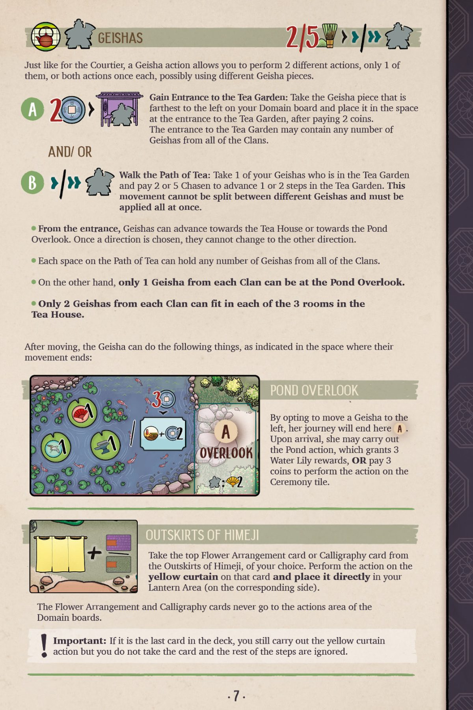
艺伎
与家臣一样,一次艺伎行动允许你执行 2 个不同的行动、只执行其中 1 个、或两个各执行一次,且可以使用不同的艺伎棋子。
A. 进入茶园:支付 2 文钱后,取个人领地版图上最靠左的艺伎棋子,放到茶园入口的格子上。
茶园入口可以容纳所有家族任意数量的艺伎。
和/或
B. 漫步茶之路:取 1 名你已在茶园中的艺伎,支付 2 或 5 个茶筅,在茶之路上前进 1 或 2 步。该移动不可拆分给不同的艺伎,必须一次性完成。
- 从入口出发,艺伎可以朝茶室方向或池畔眺台方向前进。一旦选定方向,便不可改道。
- 茶之路的每个格子可以容纳所有家族任意数量的艺伎。
- 但池畔眺台每个家族只能有 1 名艺伎。
- 茶室的 3 个房间中,每个房间每个家族最多容纳 2 名艺伎。
移动结束后,艺伎可以依其落点执行以下事项:
池畔眺台
〔选择向左移动的艺伎,旅程便在此结束〕抵达后,她可以执行水池行动,获得 3 项睡莲奖励;或支付 3 文钱,执行仪式板块上的行动。
姬路城郊外(第一格)
拿取姬路城郊外最上方的插花卡或书法卡(自选其一)。执行该卡黄色帘幕上的行动,然后将卡直接放入你的灯笼区域(放在对应的一侧)。
插花卡与书法卡永远不会进入个人领地版图的行动区。
重要:若这已是牌库的最后一张卡,你仍然执行黄色帘幕行动,但不拿取该卡,其余步骤忽略。
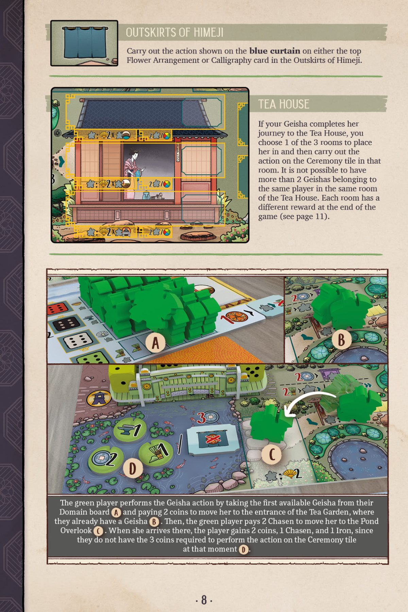
姬路城郊外(第二格)
执行姬路城郊外最上方插花卡或书法卡(任选其一)蓝色帘幕上的行动。
茶室
如果你的艺伎完成了前往茶室的旅程,你从 3 个房间中选择 1 个放入她,然后执行该房间仪式板块上的行动。同一名玩家在同一茶室房间内的艺伎不可超过 2 名。每个房间在游戏结束时提供不同的奖励(见第 11 页)。
〔示例:绿色玩家执行艺伎行动——从个人领地版图取走第一名可用艺伎 A,支付 2 文钱将她移到茶园入口,那里已有绿色玩家的一名艺伎 B。随后,绿色玩家支付 2 个茶筅,将她移动到池畔眺台 C。抵达时,玩家获得 2 文钱、1 个茶筅与 1 个铁——因为此刻他没有执行仪式板块行动所需的 3 文钱 D。〕
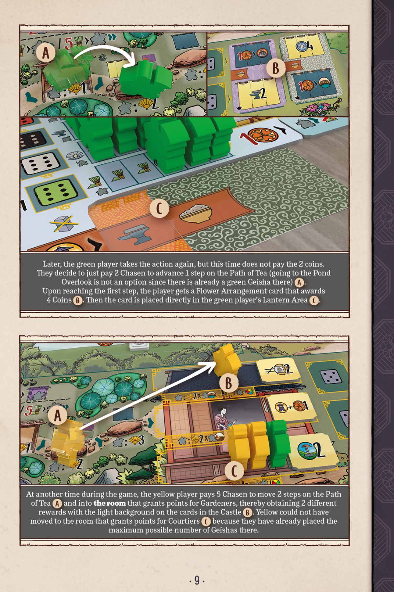
〔示例:稍后,绿色玩家再次执行该行动,但这次不支付那 2 文钱。他们决定只支付 2 个茶筅,在茶之路上前进 1 步(池畔眺台已有一名绿色艺伎,故不可前往)A。抵达第一格后,玩家拿到一张奖励 4 文钱的插花卡 B;该卡随即直接放入绿色玩家的灯笼区域 C。〕
〔示例:游戏中的另一时刻,黄色玩家支付 5 个茶筅,在茶之路上移动 2 步 A,进入为园丁计分的房间,从而从城堡的卡牌上获得 2 个不同的浅色背景奖励 B。黄色玩家无法进入为家臣计分的房间 C,因为他们在那里已放满了允许数量的艺伎。〕
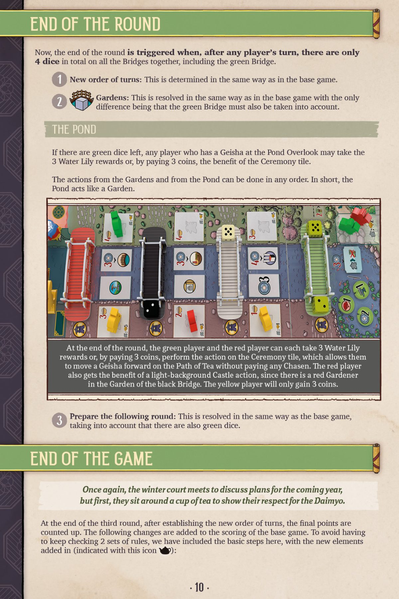
回合结束
现在,当任意玩家的回合结束后,所有桥梁(包括绿色桥梁)上合计只剩 4 颗骰子时,即触发轮结束。
1. 新的回合顺序:与基础游戏相同的方式决定。
2. 庭院:与基础游戏相同的方式结算,唯一区别是绿色桥梁也必须纳入计算。
水池
若桥上还有绿色骰子剩下,任何在池畔眺台有艺伎的玩家,可以获得 3 项睡莲奖励,或支付 3 文钱,获得仪式板块的效果。
庭院与水池的行动可以任意顺序进行。简言之,水池就像一个庭院。
〔示例:轮结束时,绿色玩家与红色玩家各自可以获得 3 项睡莲奖励,或支付 3 文钱执行仪式板块行动——该板块允许他们不支付任何茶筅,就让一名艺伎在茶之路上前进。红色玩家还能额外获得一个浅色背景的城堡行动,因为黑桥的庭院里有一名红色园丁。黄色玩家则只会获得 3 文钱。〕
3. 准备下一轮:与基础游戏相同的方式结算,并计入绿色骰子。
游戏结束
〔引言:冬日的朝堂再次聚首,商议来年大计;但在此之前,他们先围坐于一盏清茶之侧,向大名致意。〕
第三轮结束后,确定新的回合顺序,随即进行终局计分。以下变更加入基础游戏的计分之中。为免你来回翻查两本规则书,我们把基础步骤也一并收录于此,新增元素以〔抹茶图标〕标示。
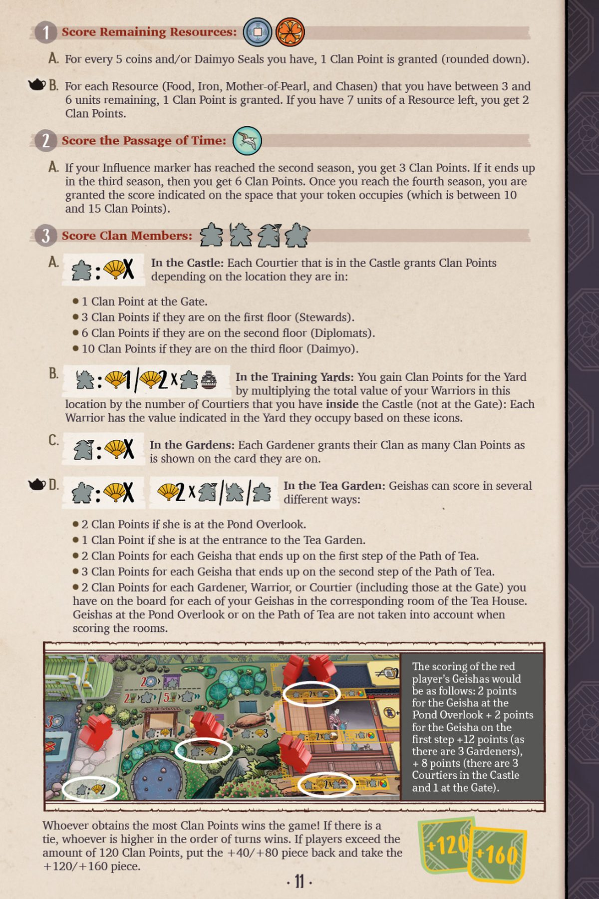
1. 剩余资源计分:
- A. 你每持有 5 文钱和/或大名家纹,获得 1 点家族分数(向下取整)。
- B. 每种资源(食物、铁、珍珠母与茶筅)剩余 3–6 个,获得 1 点家族分数;若剩余 7 个,获得 2 点家族分数。〔抹茶图标〕
2. 时间流逝计分:
- A. 若你的影响力标记已到达第二季节,获得 3 点家族分数;停在第三季节,获得 6 点;到达第四季节后,按你的指示物所在格上标示的分数获取(10–15 点家族分数)。
3. 家族成员计分:
- A. 城堡内:城堡内的每名家臣按其所在位置给予家族分数: <ul> <li>城门处 1 点;</li> <li>一层(地头)3 点;</li> <li>二层(使节)6 点;</li> <li>三层(大名)10 点。</li> </ul>
- B. 训练场:你在该处武士的总值,乘以你城堡内部(不含城门)的家臣数量,即为该训练场带来的家族分数。每名武士的数值按其所在训练场板块的图标指示。
- C. 庭院:每名园丁按其所在卡牌上显示的数值,为其家族赢得家族分数。
- D. 茶园〔抹茶图标〕:艺伎有多种计分方式: <ul> <li>位于池畔眺台:2 点家族分数;</li> <li>位于茶园入口:1 点家族分数;</li> <li>茶之路第一格:每名艺伎 2 点;</li> <li>茶之路第二格:每名艺伎 3 点;</li> <li>茶室房间:你每有 1 名艺伎位于对应房间,即可按你在版图上的每名园丁、武士或家臣(含城门处)获得 2 点家族分数。位于池畔眺台或茶之路上的艺伎,不计入房间计分。</li> </ul>
〔示例:红色玩家的艺伎计分如下:池畔眺台的艺伎 2 点 + 第一格的艺伎 2 点 + 12 点(因为有 3 名园丁)+ 8 点(城堡内有 3 名家臣、城门处 1 名)。〕
获得最多家族分数者赢得游戏!若平局,回合顺序靠前者获胜。若玩家的分数超过 120,放回 +40/+80 板块,改取 +120/+160 板块。
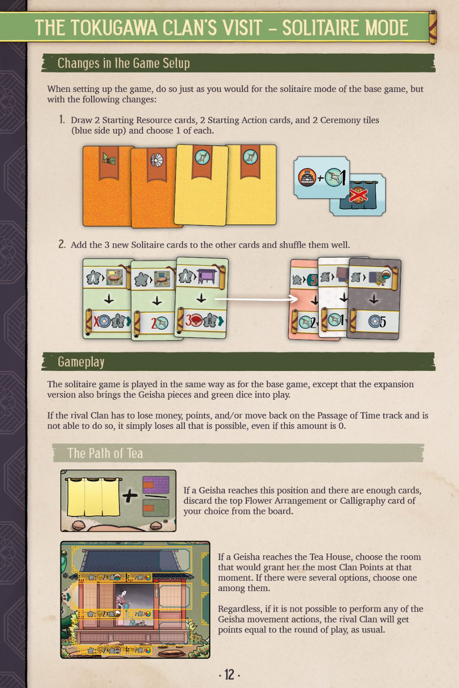
德川家族的到访——单人模式
游戏设置的变更
设置游戏时,按基础游戏单人模式的方式进行,但有如下变更:
- 抽取 2 张起始资源卡、2 张起始行动卡与 2 块仪式板块(蓝色面朝上),并各选择其一。
- 把 3 张新的单人卡加入其他单人卡,充分洗匀。
游戏进行
单人游戏的玩法与基础游戏相同,只是扩展版本还把艺伎棋子与绿色骰子带入游戏。
若对手家族需要失去金钱、分数,和/或在时间流逝轨上后退,却无法做到,则能失去多少便失去多少,即便数额为 0 也照此处理。
茶之路
若有艺伎到达此位置〔图示:茶之路第一格〕且场上有足够的卡,弃置版图上最上方的一张插花卡或书法卡(自选)。
若有艺伎到达茶室,选择此刻能为她带来最多家族分数的房间;若有多个选项,从中任选其一。
无论如何,若无法执行任何艺伎移动行动,对手家族将照常获得等于当前轮数的分数。
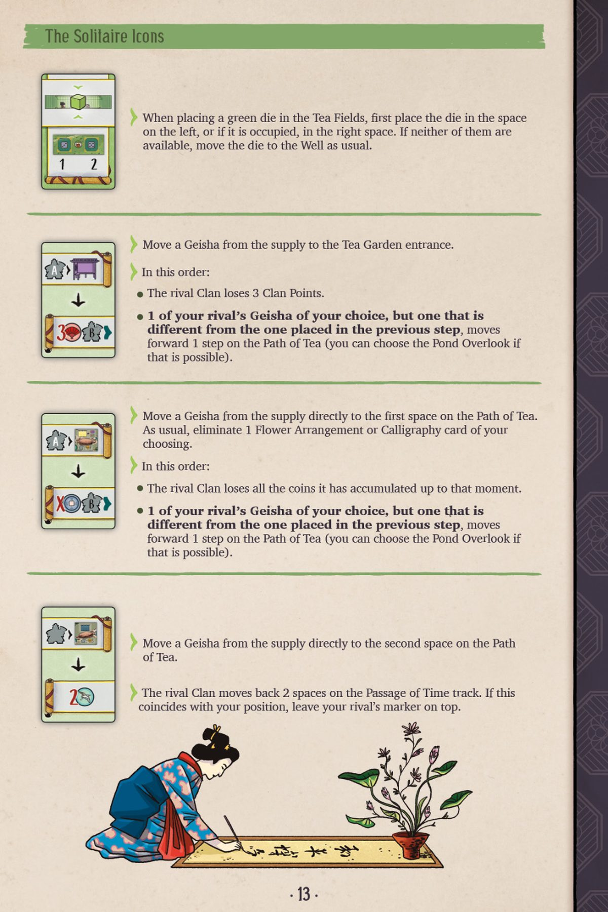
单人模式图标
〔图标:茶田〕在茶田放置绿色骰子时,先把骰子放在左侧的格子;若被占用,则放右侧格子。若两者皆不可用,照常把骰子移到水井。
〔图标:供应区 → 茶园入口〕从供应区移动 1 名艺伎到茶园入口。接着按此顺序:
- 对手家族失去 3 点家族分数;
- 对手家族的 1 名艺伎(由你选择,但须与上一步放置的不同),在茶之路上前进 1 步(若可行,你可以选择前往池畔眺台)。
〔图标:供应区 → 茶之路第一格〕从供应区直接移动 1 名艺伎到茶之路第一格;照常弃置 1 张你选择的插花卡或书法卡。接着按此顺序:
- 对手家族失去其截至此刻积累的全部金钱;
- 对手家族的 1 名艺伎(由你选择,但须与上一步放置的不同),在茶之路上前进 1 步(若可行,你可以选择前往池畔眺台)。
〔图标:供应区 → 茶之路第二格〕从供应区直接移动 1 名艺伎到茶之路第二格。对手家族在时间流逝轨上后退 2 格;若与你所在位置重合,把对手的标记留在你的标记上方。
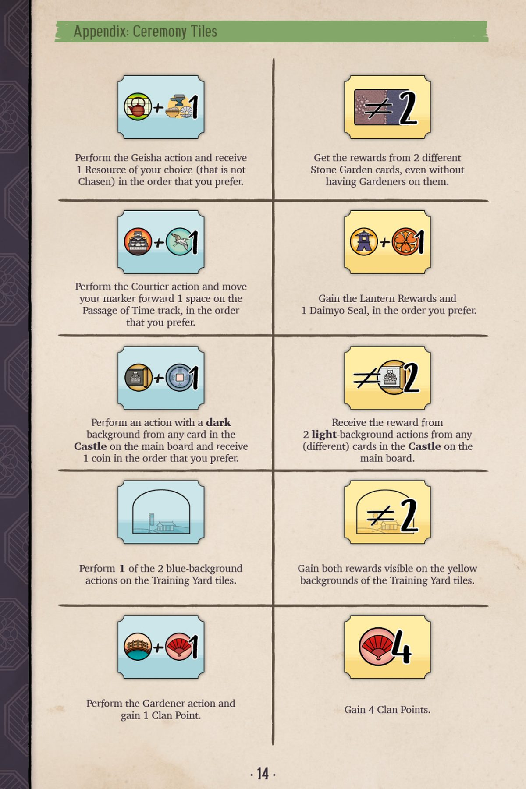
附录:仪式板块
〔图:仪式板块,黄色面/蓝色面〕
- 执行艺伎行动,并获得 1 个自选资源(不可为茶筅),顺序由你决定。
- 获得 2 张不同石头庭院卡的奖励,即使其上没有园丁。
- 执行家臣行动,并将你的标记在时间流逝轨上前进 1 格,顺序由你决定。
- 获得灯笼奖励与 1 枚大名家纹,顺序由你决定。
- 执行主版图城堡中任意卡牌上的一个深色背景行动,并获得 1 文钱,顺序由你决定。
- 获得主版图城堡中任意(不同)卡牌上 2 个浅色背景行动的奖励。
- 执行训练场板块上 2 个蓝色背景行动中的 1 个。
- 获得训练场板块黄色背景上可见的全部两项奖励。
- 执行园丁行动,并获得 1 点家族分数。
- 获得 4 点家族分数。
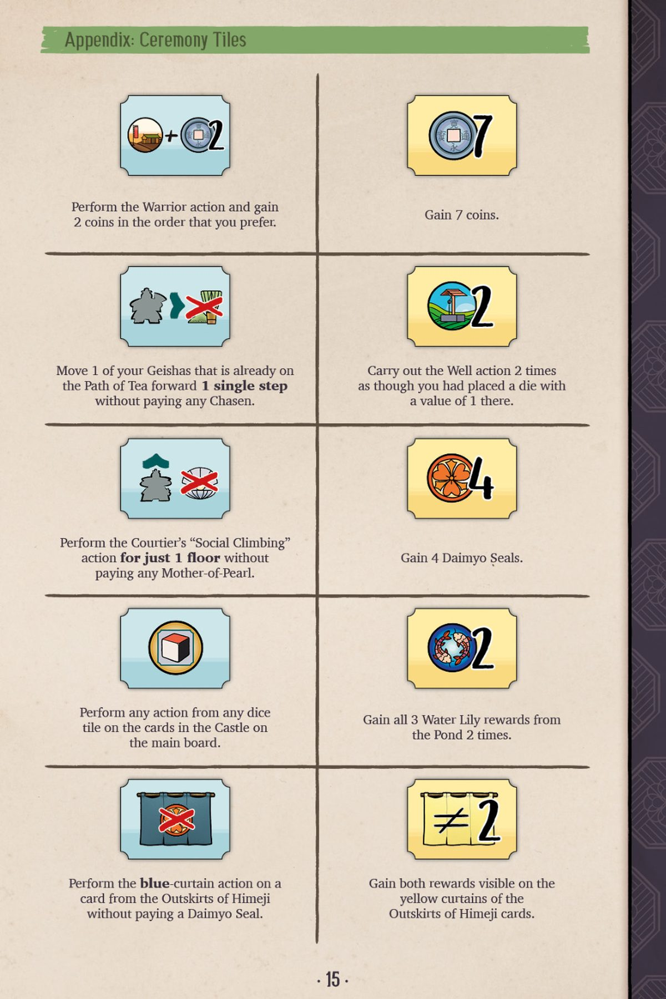
附录:仪式板块(续)
〔图:仪式板块,黄色面/蓝色面〕
- 执行武士行动,并获得 2 文钱,顺序由你决定。
- 获得 7 文钱。
- 让 1 名已在茶之路上的艺伎前进 1 步,无需支付任何茶筅。
- 如同你在彼处放置了一颗值为 1 的骰子那样,执行 2 次水井行动。
- 执行家臣的「攀附升迁」行动,只升 1 层,无需支付珍珠母。
- 获得 4 枚大名家纹。
- 执行主版图城堡卡牌上任意骰子板块对应的任意行动。
- 获得 2 次水池的全部 3 项睡莲奖励。
- 执行一张姬路城郊外卡牌的蓝色帘幕行动,无需支付大名家纹。
- 获得姬路城郊外卡牌黄色帘幕上可见的全部两项奖励。
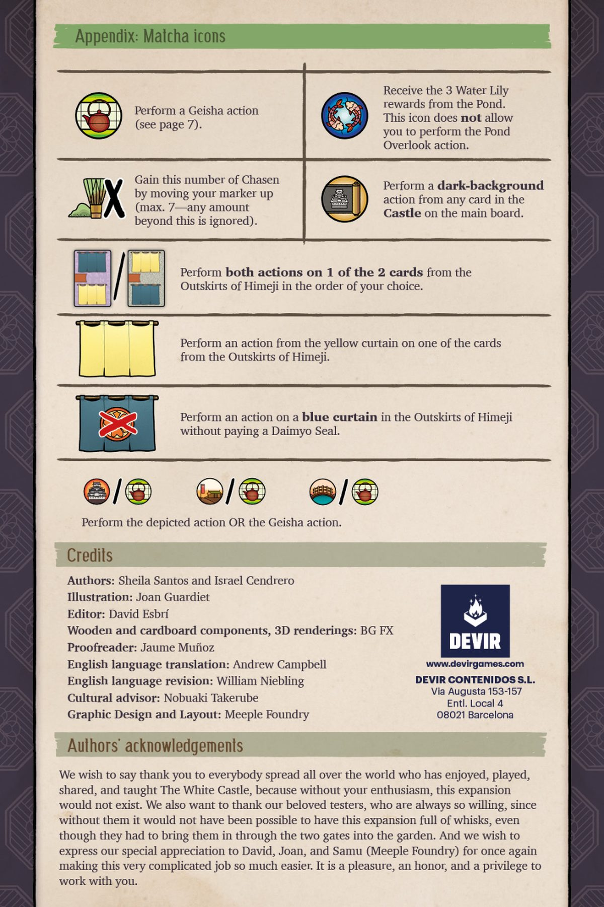
附录:抹茶图标
- 执行艺伎行动(见第 7 页)。
- 获得水池的 3 项睡莲奖励。此图标不允许执行池畔眺台行动。
- 将你的标记上移,获得该数量的茶筅(上限 7——超出部分忽略)。
- 执行主版图城堡中任意卡牌上的一个深色背景行动。
- 执行姬路城郊外 2 张卡牌之一上的两个行动,顺序由你决定。
- 执行一张姬路城郊外卡牌黄色帘幕上的行动。
- 执行姬路城郊外的蓝色帘幕行动,无需支付大名家纹。
- 执行所示行动,或执行艺伎行动。
制作人员
- 设计师:Sheila Santos 与 Israel Cendrero
- 插画:Joan Guardiet
- 编辑:David Esbrí
- 木制与纸制配件、3D 渲染:BG FX
- 校对:Jaume Muñoz
- 英文翻译:Andrew Campbell
- 英文审校:William Niebling
- 文化顾问:Nobuaki Takerube
- 平面设计与排版:Meeple Foundry
- www.devirgames.com · DEVIR CONTENIDOS S.L. · Via Augusta 153-157 · Entl. Local 4 · 08021 Barcelona
作者致谢
我们要感谢遍布世界各地、所有享受过、游玩过、分享过并传授过《姬路城》的朋友——没有你们的热情,这个扩展就不会存在。也要感谢我们亲爱的测试者们,他们永远乐于奉献;没有他们,就不可能做出这个装满「茶筅」(原文双关 whisky/whisk)的扩展——尽管他们不得不从花园的两道大门把它们搬进来。我们还要特别感谢 David、Joan 与 Samu(Meeple Foundry),再次让这件千头万绪的工作轻松了许多。与你们合作,是一桩乐事,一份荣幸,更是一种特权。